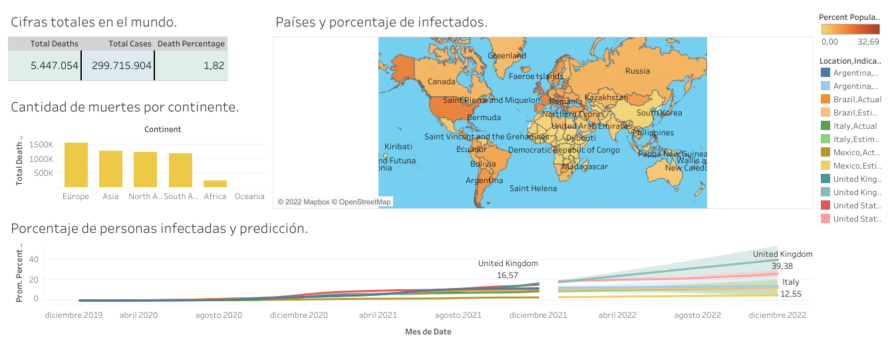
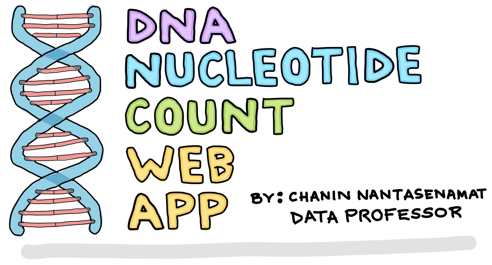

About me

Hi, I'm Federico. I'm a self-learner data analyst with a good base on web development. I love discover patrons on data, aswell display it with differents graphs and get insights.
That's why i've learning data analysis for two years and I'm working on improve my skills doing projects.
Up to know, I've developing skills on web scraping, data cleaning, data exploration, data visualization, dashboards and GUI.
Also, I'm making my first arms on data science.
Some of my tech stack
Python - SQL - Javascript
Matplotlib - Pandas - Numpy
Streamlit - Tableau - Power BI
 Simple GUI interface to compare historic results between two drivers. Data scraped and cleaned from scratch.
Web scraping, data cleaning and visulization made with Python.
Simple GUI interface to compare historic results between two drivers. Data scraped and cleaned from scratch.
Web scraping, data cleaning and visulization made with Python.
Fullstack develpoment made with React and node.js as part of alkemy bootcamp. The goal is make and functional web app using javascript with a backoffice for some users. Also, implements AWS and JWT.

Covid dashboard made with Tableau. Its shows data of cases, vaccinations and deaths from around the world.
Data cleaning and exploration made with SQL.

Fullstack web application made with flask and vue.js. The goal is make a web app that works as appointment center to differents covid assitence center in the province of Buenos Aires.

Developing twelve apps on Python, deployed on Streamlit. The goal is be an introduction to data science and machine learning.

Airbnb dashboard to show prices of houses in th state of Washington. it filters by numbers of room, zipcode, revenues, etc. Cleaning with SQL.